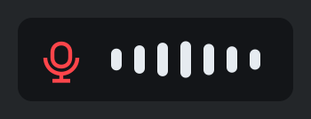
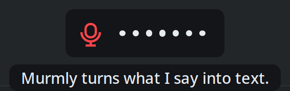
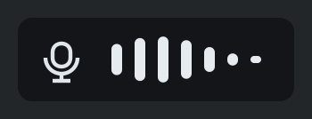
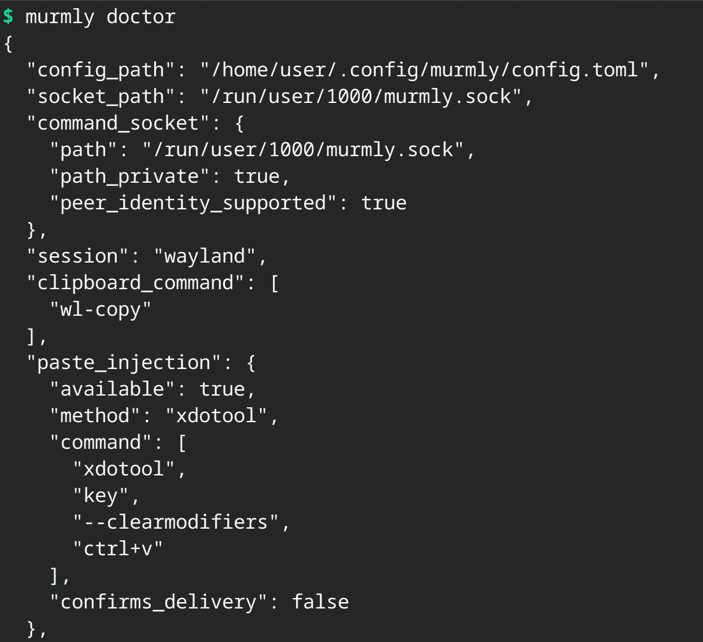

How it works
-
Press your hotkey
A small indicator appears at the bottom of the screen and its bars follow your voice. Nothing else moves, and the window you were in keeps your cursor.

-
Speak
If you turn on live transcription, what you are saying appears under the indicator as you say it. It is there to show you it is working — it is never what gets typed.

-
Press it again
The indicator changes while murmly transcribes, then the finished text is typed into the window you started in and the indicator disappears.

What makes it different
It runs on your machine
Your microphone, the speech model and the window you are typing into are all on the same computer, and your voice never leaves it. There is no account, no server and no subscription.
The first run downloads the model it will use. After that murmly needs nothing from the network.
A transcript is not lost to a paste that quietly failed
When murmly cannot confirm the text was delivered, it leaves it on your clipboard rather than putting your previous clipboard back over it. Worst case you press paste yourself. You do not lose what you said.
What you see while speaking is only a preview
Live text is feedback and nothing else. It never reaches your clipboard, is never written to a file, and is thrown away the moment you stop. The text you get is produced by a fresh pass over the whole recording.
It waits for the right window
On an X11 session murmly checks that you are still in the window you dictated into, and refuses to type if you have moved on. Your words do not land in the wrong chat.
Choose speed or accuracy
Three sizes, one setting: fast for the smallest model, balanced for the default, and accurate for the largest. Change your mind whenever you like.
It can also speak
murmly can read text out loud, so a program you are running can tell you it has finished while you are looking somewhere else. It ships a hook that announces the end of a coding agent's turn: three rising notes, then one sentence naming the project and branch, then a short summary in the agent's own words.
Speech is off until you turn it on, because a machine that starts talking after an upgrade is making noise nobody asked for. On the machine it was measured on — an RTX 3080 Laptop with sixteen cores, across two runs — synthesis runs at roughly five times real time, so each sentence is ready well before the audio in front of it has played out.
Install it
What it needs
- Fedora
- murmly is Fedora-first. Other distributions are not what it is built and tested against.
- KDE Plasma
- The hotkey registers itself and the indicator draws itself on Plasma. On other desktops murmly still installs and prints the command to bind the key yourself.
- Python 3.12 or newer
- Older versions are not supported.
- A terminal
- Installation is one command that you run yourself. There is no graphical installer.
- X11, for now
- murmly is verified end to end on X11. Plasma Wayland uses the same registration path but has not been verified all the way through, and murmly says so while installing.
Clone the repository, then run one command. It installs the system packages for your session after showing you the command and asking, sets up the environment, binds your hotkey and starts the service.
./setup.sh install Meta+XThe same script handles upgrading and removal. Pick a combination that suits you — murmly checks before it binds, and tells you who owns a key it will not take.
It tells you what it found
One command reports what murmly detected on the machine it is running on, and names what to install for anything it could not find.
murmly doctor
The README is the full reference: every configuration option, the speech protocol, and what to do when something does not work.